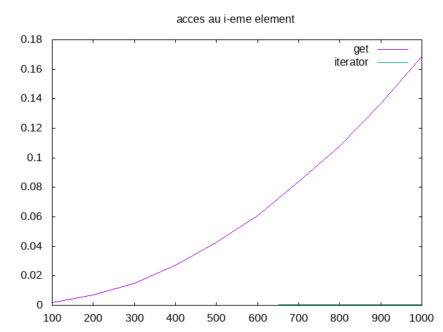

tp-iterateurs¶
Etat du TP¶
Vasco Lucas Skoczylas Nestor
Réponses aux questions¶
Question 3.2.4.1¶
L’élement supprimé est le dernier renvoyer par next c’est a dire l’élement précedant l’itérateur Après la suppression, l’itérateur se trouve entre les deux élements qui se trouvait avant et après l’élement supprimé
Question 3.2.4.3¶
On interdit l’appel à deux remove successifs sans next entre deux pour éviter le cas ou l’itérateur supprime le premier élement de la liste lors du premier remove, puis effectue le deuxième remove en étant en tête de liste ce qui est impossible et déclenchera une erreur
Question 3.2.4.4¶
Pour supprimer tout les élements d’une liste on enchainera : iterateur.next() iterateur.remove()
autant de fois qu’il y a d’élements dans la liste
Question 3.2.5.3¶
On remarque qu’en utilisant get, le temps d’accés à tout les élements d’une liste augmente de manière exponentielle par rapport au nombre d’élements, alors que l’accès en utilisant uniquement l’itérateur demande un négligeable. Il est donc plus efficace d’accéder aux élements en utilisant l’itérateur